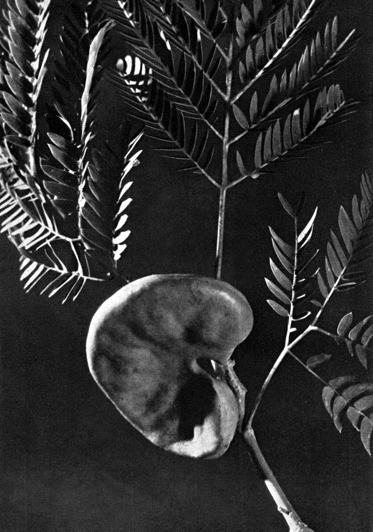

- Volver a
- Inicio
- Revista Digital
- Libros
Maravillas de Nuestras Plantas Indígenas
Restauración Fotográfica: Centro Cultural Argentino de Montaña, Natalia Fernández Juárez
AUTOR: Ilse von Rentzell
EDITORIAL: Editores Ilse von Rentzell y Cia, Imprenta Lopez, Argentina.
AÑO: Primera Edición, septiembre de 1935
FORMATO: 20 x 29 cm.
PÁGINAS: 108
IDIOMA: Castellano
FOTOGRAFÍAS: Anatole Saderman
ILUSTRACIONES: Bacchetta y Pissinis
VER SU BIOGRAFÍA: Ilse Von Rentzell Atkinson. Andinista, escritora, dibujante, fotógrafa y botánica

Tapa del libro Maravillas de Nuestras Plantas Indígenas. Autor: Ilse von Rentzell
Prefacio
Tengo el honor de presentar en estas hojas el deseo de despertar el interés general para la flora maravillosa de nuestra República, que he cruzado con frecuencia del Sud al Norte y viceversa.
Cuando hice mi largo viaje al interior, con rumbo al Chaco y cuando por primera vez en mi vida atravesé el monte virgen de esta región, a cada rato detenía mi caballo para mirar esta grandiosa flora exuberante y estupenda que nunca me había sido dado contemplar anteriormente.
Los racimos amarillos del Chañar, con su perfume fascinante, las flores del Lapacho, como mariposas tropicales sobre las ramas desnudas, los ardientes corimbos del Seibo, las rosadas y blancas estrellas del Palo Borracho, luciendo entre el follaje, y la Victoria Regia, como copa de marfil, flotando en el reposado espejo de las lagunas escondidas en los brazos del monte, me encantaron.
Tan profunda fué la emoción que despertaron en mí estas idiosincrasias florales, que allí fué donde nació el deseo de describir e ilustrar esta Flora en una forma digna de la belleza virgen, pero accesible a todos, sin pretender hacer una obra científica.
Poco después de este, mi primer viaje al Chaco, y llena de mis impresiones recibidas allí, se me presentó la oportunidad de conocer y atravesar los inmensos montes vírgenes de la Cordillera Patagónica.
Y fué aquí donde definitivamente maduraron mis planes: la grandiosidad del paisaje, único en su carácter, por el hecho de que en esta región se tocan los extremos, ventisqueros bordeados por montes siempre verdes, que no se encuentran en ninguna otra parte del mundo; estos inmensos montes vírgenes donde se hallan representadas unas 40 especies de altos árboles de una Flora que trepa desde los pantanos hasta la nieve, donde los glaciares se hunden en los lagos o en el océano. Todo este conjunto maravilloso fué lo que fortaleció la idea de describir algo de lo que han visto mis ojos encantados.
Dibujo del Libro: Maravillas de Nuestras Plantas Indígenas de Ilse von Rentzell
Dibujo del Libro: Maravillas de Nuestras Plantas Indígenas de Ilse von Rentzell
Me permito presentar a mis lectores las bellezas de un conjunto de plantas perfectamente conocidas por los profesionales, pero ignoradas casi por completo por el sencillo transeúnte, grande o chico, a quien deseo dedicar estas líneas para despertar su interés por lo que no sólo es bello sino que también es nuestro. Todo lo que presento es ideado como primer ensayo. Tengo en preparación una segunda serie que tiende a ampliar la representación de flores indígenas argentinas.
Naturalmente, no me ha sido posible realizar sola este propósito. Estuve obligada a dirigirme a todas las instituciones científicas, particulares y profesionales a mi alcance y tengo que manifestar que todas las personas a quienes he consultado, se ofrecieron espontáneamente a coadyuvar, por haber comprendido la finalidad de mi idea. Como guía me resultó muy útil la obra del Ing. Agr. PARODI “Las Plantas indígenas no alimenticias cultivadas en la Argentina”, que me obsequió el autor gentilmente para ayudarme en mi trabajo, y que le agradezco aquí sinceramente.
Asimismo, expreso mis sentidas gracias al señor ingeniero agrónomo ARTURO BURKART, quien se encargó de revisar mi trabajo y quien me aconsejó que consultara la biblioteca de la Facultad de Agronomía y Veterinaria, donde he encontrado muy valioso material.
También es mi deber expresar en este lugar mi agradecimiento al señor ANATOLE SADERMAN, quien con mucha comprensión ha sabido representar en sus fotografías todo lo que caracteriza cada planta. Lo mismo a los señores BACCHETTA Y PlSSINIS, a quienes correspondió ejecutar los esmerados grabados, doy mis sinceras gracias.
Todas las plantas fotografiadas las he recogido en los alrededores de Martínez y San Isidro, en el Jardín Botánico de Buenos Aires y en el Jardín Botánico de la Facultad de Agronomía y Veterinaria.
Será para mí una gran satisfacción ver difundida esta obra y haber contribuido así al conocimiento de las bellezas de nuestro hermoso y pródigo suelo.
Buenos Aires, Julio 1935.
ILSE von RENTZELL
Libro Maravillas de Nuestras Plantas Indígenas y algunas exóticas
Prólogo del Dr. Angel Giménez. Autor: Ilse von Rentzell
Caesalpinia Gilliesii (Hooker) Wall
Leguminosas-Cesalpinoideas
Barba de chivo; en Córdoba “légaña de perro”; en Mendoza “disciplina de monja’’; en La Rioja “píscala”.
Arbusto inerme, originario de la Argentina (formación del Monte) de la América tropical y subtropical. Accidentalmente se encuentra en Corrientes, Entre Ríos, Uruguay y Sur del Brasil. Es un arbusto de 1-2 metros de alto, que se cultiva por la belleza de sus flores y como planta medicinal.
Según el profesor HlERONYMUS, es insectívoro, matando y digiriendo insectos, por medio de un líquido segregado de sus glándulas. Esta opinión no es compartida por el profesor SEQKT.
Los campesinos usan gajos floríferos para estirpar insectos de la casa, colgándolos en medio de la pieza. Las legumbres de este arbusto contienen un principio venenoso. La inflorescencia es racimosa. El cáliz es de color amarillo-verdoso, los pétalos son de un color amarillo-canario, mientras los estambres y los estilos, mucho mayores que los pétalos, son de color carmín. Las legumbres son achatadas, dehiscentes con 4 a 6 semillas comprimidas. Las partes jóvenes de la planta están cubiertas de pelos glandulosos.
Caesalpinia Gilliesii - Barba de Chivo. Floración: Diciembre hasta Marzo.
Libro: Maravillas de Nuestras Plantas Indígenas de Ilse von Rentzell
Fuchsia Magellanica
Enoteráceas
Aljaba, Chilca en la región de los Lagos del Nahuel-Huapí, Bariloche, prov. Rio Negro
Arbusto con hojas persistentes, originario de los Andes subantárticos, desde Neuquén hasta Tierra del Fuego. Suele cultivarse como planta de adorno en los jardines de Bariloche y otras ciudades argentinas.
Fué el misionero FLUMIER, quien introdujo en Europa la Fuchsia, entusiasmado de ella, por su belleza. Hace 250 años que empezó esta linda flor a conocerse en Europa y sigue gozando siempre del favor de los amantes de las plantas.
Tiene un cáliz de color rojo escarlata, que forma singular contraste con la corola, cuyos pétalos son de un color azul obscuro. Es una flor hermafrodita muy graciosa por su disposición colgante. La fructificación se realiza por intermedio del “picaflor”. El fruto, formado por 4 carpelos, tiene un número infinito de semillas. Se ha observado en los valles de la Cordillera del Sur, que el follaje es utilizado por las haciendas que tienen que buscar su alimento en los bosques.
Fuchsia Magellanica - Aljaba. Floración: Enero hasta Marzo.
Libro: Maravillas de Nuestras Plantas Indígenas de Ilse von Rentzell
Enterolobium Contortisiliquum (Vell.) Morong
Timbó, Pacará, Oreja de negro Leguminosos-Mimosoideas
Árbol de una altura mayor de 14 metros y con un tronco de un grosor notable. Originario de América del Sur, donde tiene una vasta área geográfica. En la República se encuentra en Tucumán, Chaco, Jujuy, Corrientes y es cultivado hasta en la provincia de Buenos Aires, donde adorna calles y plazas. Tiene una amplia copa de aspecto de enorme sombrilla y hojas caducas. Estas son astringentes y la infusión se usa en gárgaras y para lavar úlceras y heridas.
Las frutas sirven para hacer tinta. La corteza y las frutas machacadas y puestas en infusión con agua caliente se emplean como jabón para lavar telas de lana y algodón (contiene saponina). La corteza contiene tanino y sirve para curtir.
La madera, a pesar de no ser muy compacta, es sin embargo de buena clase, flexible y elástica; en tablas y tablones se emplea para puertas, construcción de buques, tinas de baño, palanganas, vasijas de todo género, ruedas hidráulicas y tiene muchos otros destinos más.
El olor desagradable de la madera seca tiene un efecto particular, pues hace estornudar a los que la trabajan. Las flores pequeñas, son poco vistosas y se hallan reunidas en cabezuelas esféricas en la extremidad de los tallos. La floración es a mediados de Diciembre.
Los frutos son vainas transformadas que no se abren a la madurez. Su forma y color obscuro le han valido se le llame “oreja de negro”.

Enterolobium Contortisiliquum - Timbó. Fruto.
Libro: Maravillas de Nuestras Plantas Indígenas de Ilse von Rentzell
Erythrina Crista-Galli
Seibo, Zuiñandy chopo Legiminosas-Papilionoideas
Se halla en Buenos Aires, Entre Ríos, Santa Fe, Tucumán, Salta, Chaco, Corrientes y especialmente abundante en las costas del Río Paraná y sus afluentes. Originario del Uruguay y la Argentina subtropical, Paraguay y sur del Brasil.
Es un árbol de 4 a 10 mts. de altura, de hojas caducas y una ramificación muy irregular. La madera es blanda, liviana y porosa. Sin embargo se aplica para los marcos de las colmenas. Sirve también para la construcción de las balsas improvisadas para el paso de ríos pequeños. En tiempo del PADRE LOZANO (conf. Conquista del Río de la Plata, ed. A. Lamas, pág. 218), trabajaron además, con la madera, rodelas y broqueles livianos. Según el Padre Lozano se hizo también un bálsamo con la corteza y su flor. Los troncos y las ramas sirven para componer los valles y caminos en lugares húmedos; los campesinos aseguran es muy resistente.
Con cataplasmas hechas de la corteza fresca machacada curan los indios heridas causadas por los tigres, jaguares y otros animales. Las flores encarnadas dan color al lienzo y a la lana.
Las flores de color rojo carmín tienen el estandarte y la quilla bien desarrollados. El estandarte cuelga hacia abajo en vez de erguirse hacia arriba, lo que pasa casi en todas las flores amariposadas. Será a propósito, pues en el seibo el transporte del polen sobre los estigmas no es efectuado por insectos, como en la mayor parte de las leguminosas sino por picaflores.
La inflorescencia es pedunculada, axilar, racimos de 6 a 12 flores. Los frutos legumbres de 8-12 cm. con pocas semillas, de forma muy parecida a la de los porotos comunes, pero con salpicaduras negras. Para extirpar un árbol de seibo no es suficiente cortar el tronco. Brota en seguida de nuevo. Hay que pelar el tronco hasta que se seque.
Por su corteza esponjosa es el preferido por las epífitas y podría utilizarse, — como su congénere E., indica LAM, en los trópicos —para soporte de la vainilla.
Erythrina Crista-Galli - Seibo. Floración: De Diciembre a Febrero.
Libro: Maravillas de Nuestras Plantas Indígenas de Ilse von Rentzell
Jacaranda Acutifolia Humb. et Bonp
Jacarandá, Tarco y Telco. Bignoniáceas
Hermoso árbol originario de la América austral desde el Brasil hasta el norte de la Argentina. Se encuentra en Tucumán, Salta, Jujuy, Chaco, Corrientes y en Entre Ríos y Buenos Aíres, cultivado. Alcanza alturas hasta 8 a 10 metros. Es de hojas caducas y flores azulado-violáceas, que aparecen antes que las hojas. Es un lindísimo adorno de las selvas subtropicales del norte de la República y uno de los árboles indígenas más apropiado para plazas y avenidas.
Las hojas trituradas son astringentes y se usan para cataplasmas contra úlceras, las que se lavan también con el zumo de las hojas o la infusión de ellas. Con la corteza áspera, reducida a polvo, se dice curan las enfermedades sifilíticas.
Por las hojas finamente divididas, el “Tarco” simula Acacias o Mimosas, cuando se halla sin flores; para reconocerlo basta fijarse en la posición opuesta (por pares) de las hojas, que en aquellas Leguminosas son siempre alternas. Las flores, grandes y vistosas, se hallan reunidas en panojas terminales.
Los frutos leñosos, casi circulares, achatados, forman una cápsula, con los bordes un poco ondulados. Se abren ligeramente dejando caer gran cantidad de semillas anchamente aladas.
Jacaranda Acutifolia - Jacarandá o Tarco. Floración: Enero y Febrero.
Libro: Maravillas de Nuestras Plantas Indígenas de Ilse von Rentzell
Índice General
Prólogo 5
Prefacio 11
Plantas Indígenas 13
Plantas Exóticas 65
Descripciones 87
Obras consultadas 102
INDICE DE LAS PLANTAS CITADAS:
Con nombres científicos 105
Con nombres vulgares 106
Área Restauración Fotográfica del CCAM: Natalia Fernández Juárez
Es nuestra misión dar a conocer la Cultura de Montaña Argentina y por lo tanto es prioritario que si es utilizado nuestro material visual, acuerden con la institución su uso. Si están interesados en el material fotográfico del CCAM, le sugerimos que se contacten a: info@culturademontania.org.ar
Todo el material fotográfico del CCAM es restaurado y publicado en alta resolución.